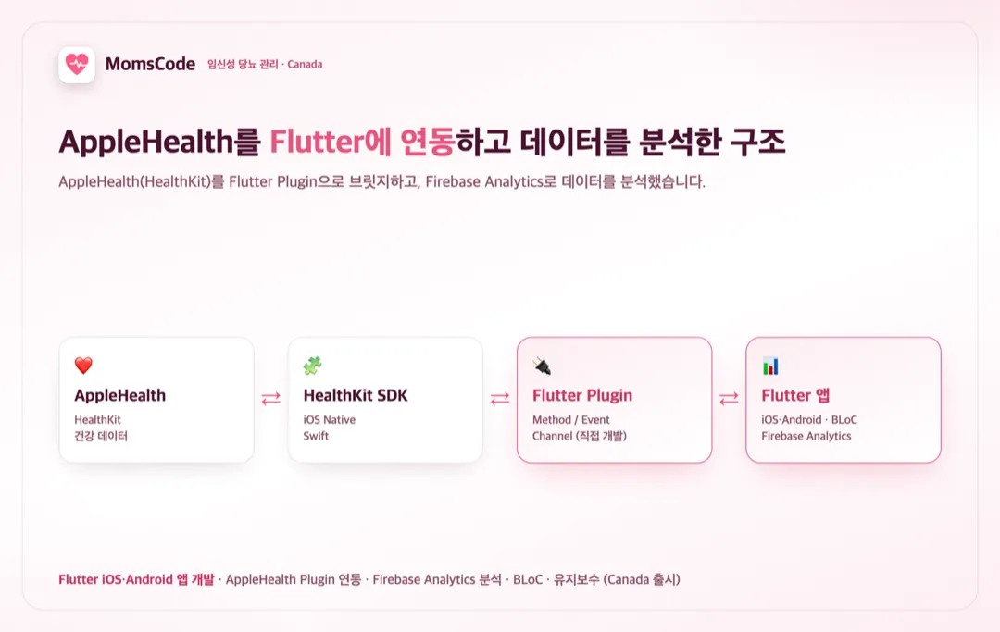

홈 / 포트폴리오 / MomsCode — 헬스케어 (캐나다 출시)
앱 개발
임신성 당뇨 관리 앱 Flutter 개발 및 AppleHealth 연동 (Canada 출시)
참여 기간 · 2019.12 ~ 2020.07

포트폴리오 소개
- 생활습관을 기록해 임신성 당뇨를 관리하도록 돕는 헬스케어 앱(캐나다 출시)에서, AppleHealth 연동과 사용자 데이터 분석 부분을 담당했습니다.
- AppleHealth는 iOS 네이티브(HealthKit·Swift) 형태라, 이를 Flutter 플러그인(Method/Event Channel)으로 만들어 Flutter 앱에서 건강 데이터를 활용하도록 구현했습니다.
작업 범위
- Flutter iOS/Android 앱 개발 (iOS 파트 Plugin은 Swift)
- AppleHealth를 Flutter Plugin으로 직접 개발해 연동 (Method/Event Channel)
- 건강 데이터의 앱 수신·활용 처리
- Firebase Analytics로 사용자 데이터 분석·서비스 개선
- BLoC 패턴 기반 상태관리 아키텍처
- 개발 완료 후 유지보수 대응
주요 업무 및 기능
- Native ↔ Flutter 브릿지: Method/Event Channel로 AppleHealth(HealthKit)를 Flutter에 연동
- 건강 데이터: 생활습관·건강 데이터를 앱에서 수신·활용하도록 처리
- 데이터 분석: Firebase Analytics로 사용자 행동·데이터를 분석해 서비스 개선에 활용
- BLoC 아키텍처로 데이터 흐름·상태 구조화
주안점
- 네이티브 전용 AppleHealth(HealthKit)를 Flutter 플러그인으로 안정 연동
- 건강 데이터의 정확한 수신과 개인정보 민감성 고려
- 데이터 분석 기반의 서비스 개선 루프
문제점
- AppleHealth(HealthKit)가 iOS 네이티브 전용이라 Flutter 앱에 그대로 붙일 수 없었습니다.
- 임신성 당뇨 관리 특성상 생활습관·건강 데이터를 정확히 수신·활용해야 했습니다.
- 서비스 개선을 위해 사용자 데이터를 분석할 수 있는 기반이 필요했습니다.
프로젝트 목표
- AppleHealth를 Flutter 플러그인으로 연동해 Flutter 앱에서 건강 데이터를 활용.
- Firebase Analytics로 사용자 데이터를 분석하고 서비스 개선에 활용.
- BLoC 아키텍처로 데이터 흐름을 유지보수 가능하게 구조화.
주안점
- 네이티브 AppleHealth의 Flutter 브릿지 안정성.
- 건강 데이터 수신 정확성과 개인정보 민감성.
- 데이터 분석 기반 서비스 개선.
프로젝트 성과
AppleHealth 건강 데이터 연동
AppleHealth(HealthKit)를 Flutter 플러그인(Method/Event Channel, Swift)으로 연동해 앱이 건강 데이터를 활용하도록 구현했습니다.
Firebase Analytics 기반 데이터 분석
Firebase Analytics로 사용자 데이터를 분석해 서비스 개선에 활용하고, BLoC로 데이터 흐름을 구조화했습니다.
담당 기능 개발 완료 후 유지보수
캐나다에 출시된 앱에서 담당한 연동·분석 기능을 완료하고, 배포 이후 유지보수 단계까지 대응했습니다.
비슷한 프로젝트를 계획 중이신가요? 아이디어 단계여도 괜찮습니다.
프로젝트 문의하기 →